Kazmi - Energy prediction
This note showed only my personal solution to some of the exercises asked in the JupyterNotebook from the lecture 2 and 3 following the open-source course energyDS by Hussain Kazmi, please refer to his GitHub page for further study. The lecture and also prerequisites of Python have been WELL EXPLAINED everything related to energy prediction using python and data-driven approaches.
| INDEX |
|---|
LECTURE 2 Exercises: Fitting by .polyfit() |
| LECTURE 3 Exercises 1: AUTOCORRELATION |
| LECTURE 3 Exercises 2: error metrics |
| LECTURE 3 Exercises 3: Linear regression fitting |
LECTURE 2 Exercises: Fitting by .polyfit()
Fit a line (linear function) to the three plots we have created in this section using this library
Fit higher order functions (2 to 20) to the datasets using the same library (by changing the polynomial degree in the arguments). Explain what happens as you increase the order of the polynomial. Pay particular attention to regions where you have few data points and when you are extrapolating (i.e. predicting beyond what was observed).
1 | #solution to Q1 |
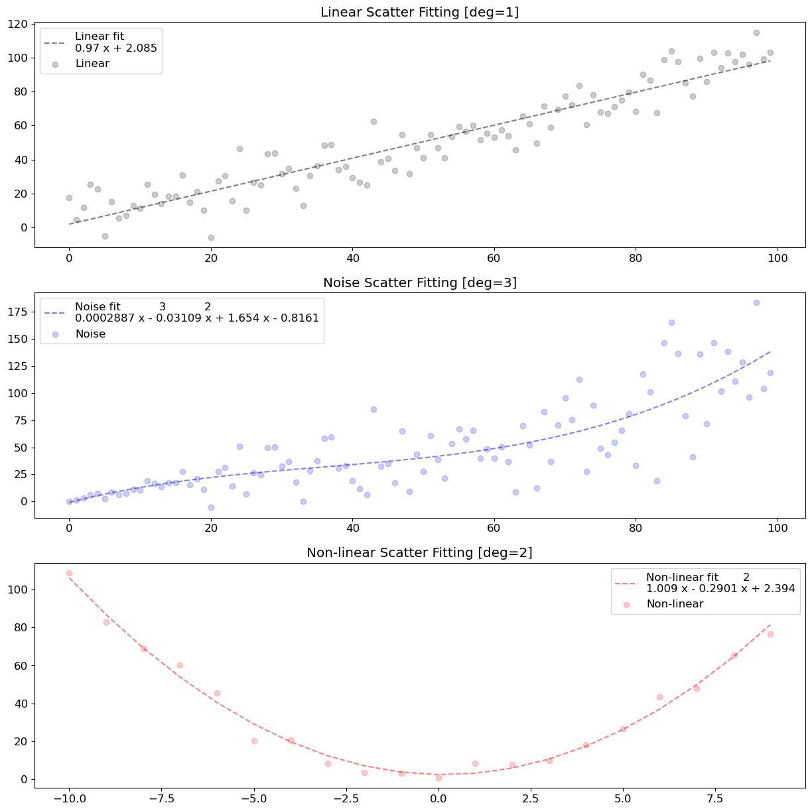
1 | # comments to Q2: |
LECTURE 3 Exercises 1: AUTOCORRELATION
- Load the three datasets with missing values from lecture 2. Now create a time series which contains a value of 1 at the indices where the time series has a missing value (and takes a value of 0 elsewhere). Repeat this for all three time series with missing values. Now calculate the autocorrelation function for these new time series. What do you notice in the autocorrelation functions?
- Decompose the time series into its components, as discussed earlier. What conclusions can you draw?
1 | # step 1 : missing data visualization |
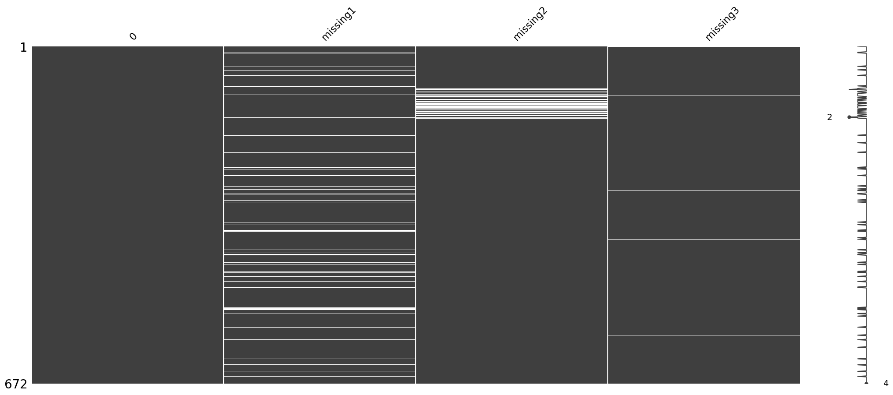
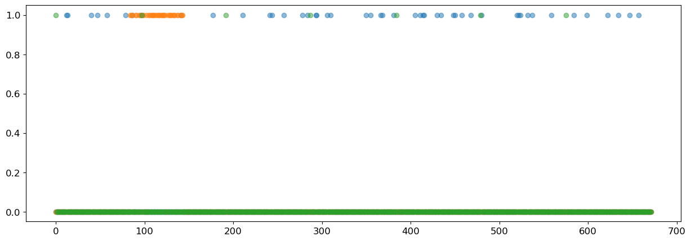
1 | # step 3: Autocorrelation and decomposition of new time series |
missing 1
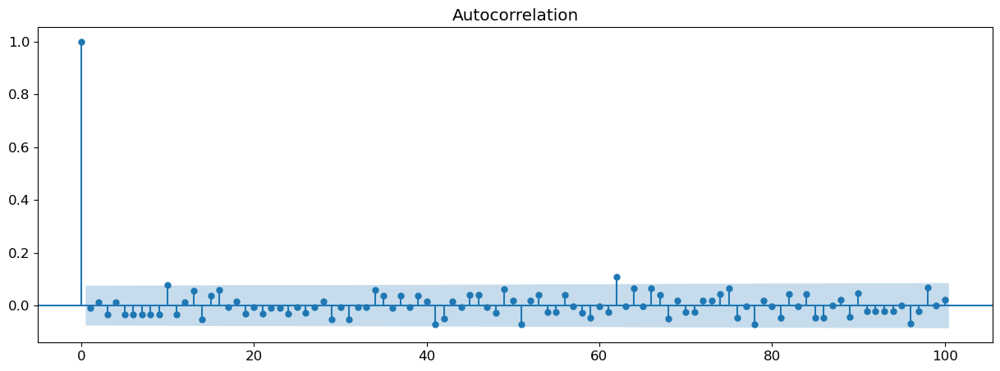
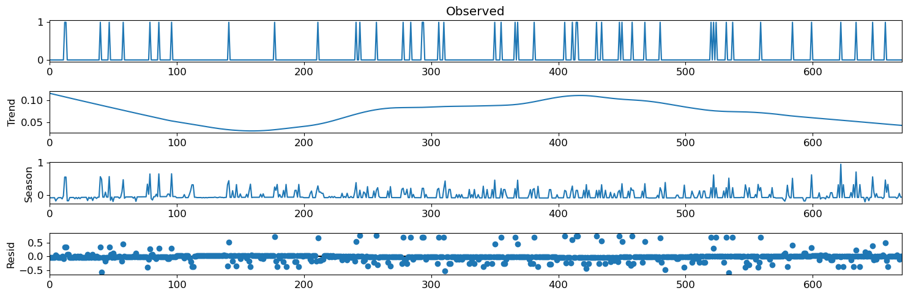
missing 2
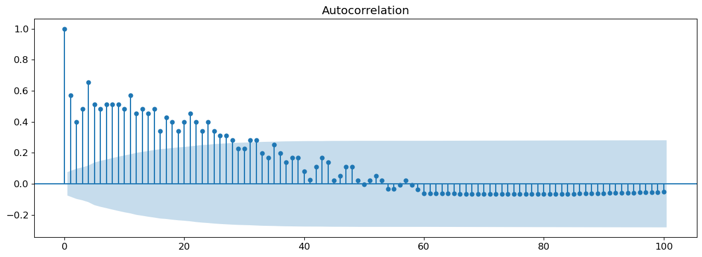
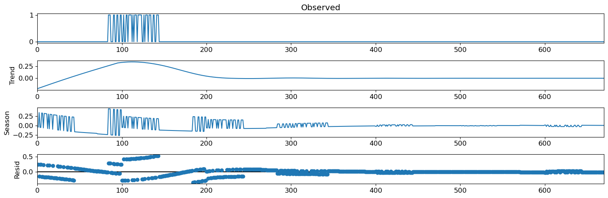
missing 3
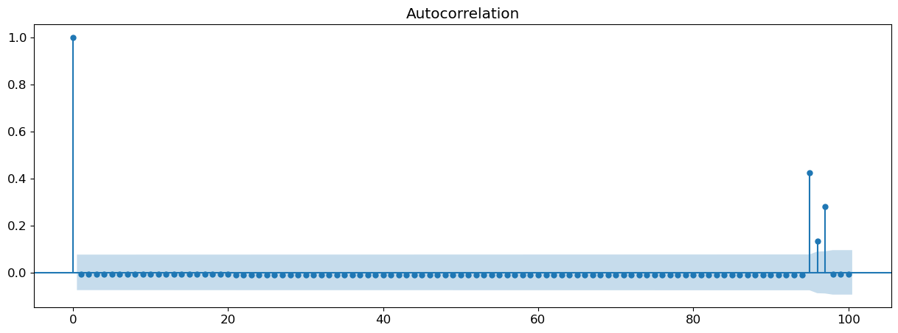
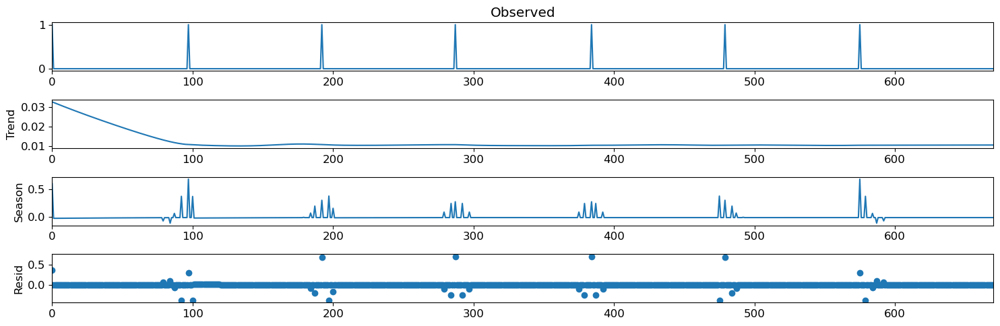
LECTURE 3 Exercises 2: error metrics
- In this section, we have made a forecast for just one day. In practice, this forecast needs to be created every day (and sometimes updated multiple times during each day as well). For instance, demand aggregators need to make a forecast for electricity demand everyday so they can participate in electricity markets. Rewrite the code above to create a one-day ahead persistence forecast for the whole year, storing the daily forecast for each day in a vector. Using this forecast, calculate the MAE and MAPE of this forecast, and the coefficient of determination.
- Calculate the autocorrelation of the error time series (i.e. measured values - forecast values) calculated for the whole year. What do you infer from the results?
- What insights do you draw based on the type of error the persistence forecast is making? Note that information in the following section on visualizing errors will also be useful to answering this question.
1 | # solution to Q1: |
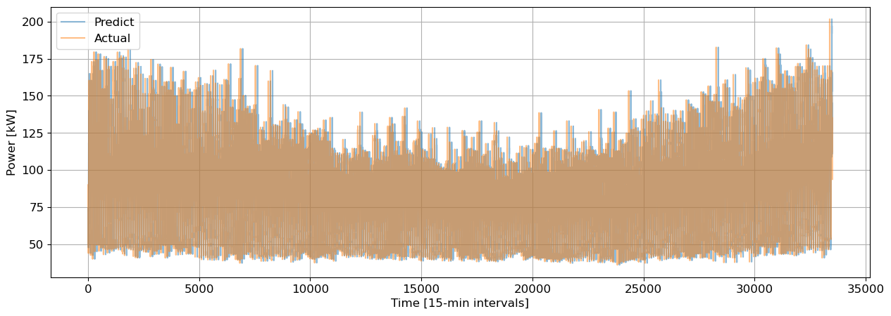
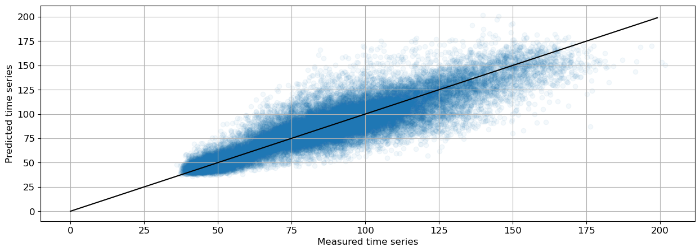
MAE = 9.22
MAPE = 10.76
R2 = 0.79
1 | # solution to Q2: |
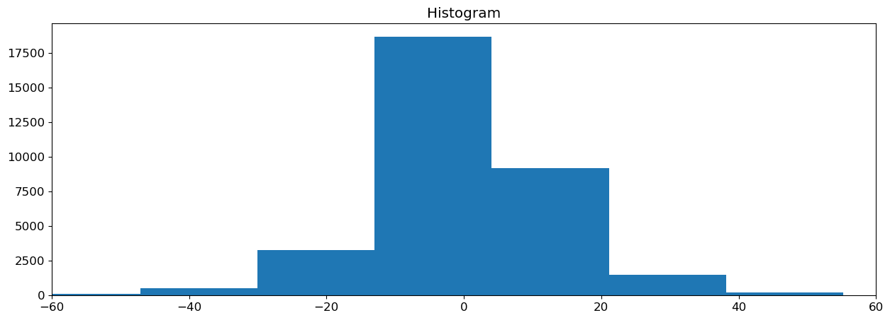

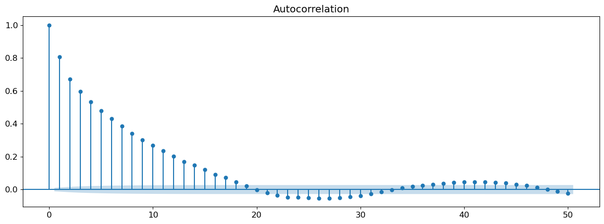
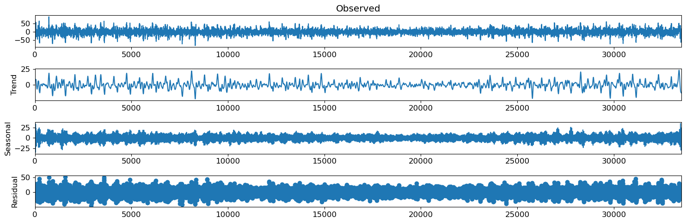
Visualizing errors
NOTE: The following contents are mainly written by prof Kazmi, but when I run the code and it is not showing what I expected. Therefore, I changed some of them as following:
1 | # create 2D chart of the errors |
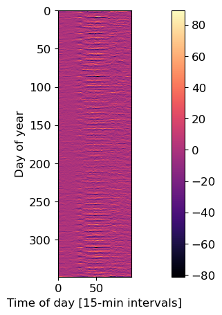
1 |
|
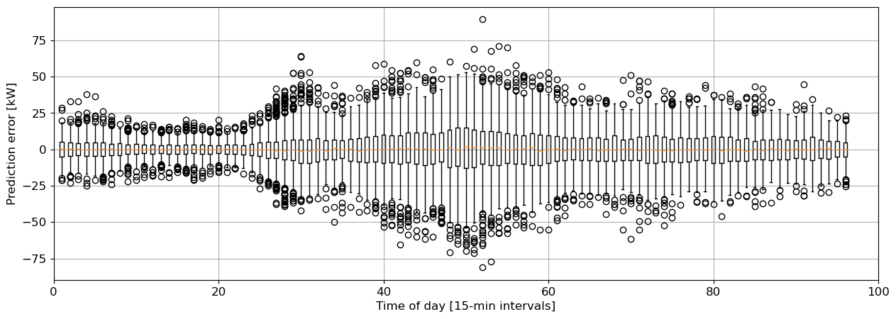
Training a linear model
NOTE: The code below was written by the author prof Kazmi, the reason to keep it is that it would related to the later exercises.
1 | def extract_features(load, currentIndex, featureCounter): |
2016
1 | lin_model.fit(xVar[0:feature_counter, :], yVar[0:feature_counter]) |
LinearRegression()
1 | prediction_linear = lin_model.predict(xVar[0:feature_counter, :]) |
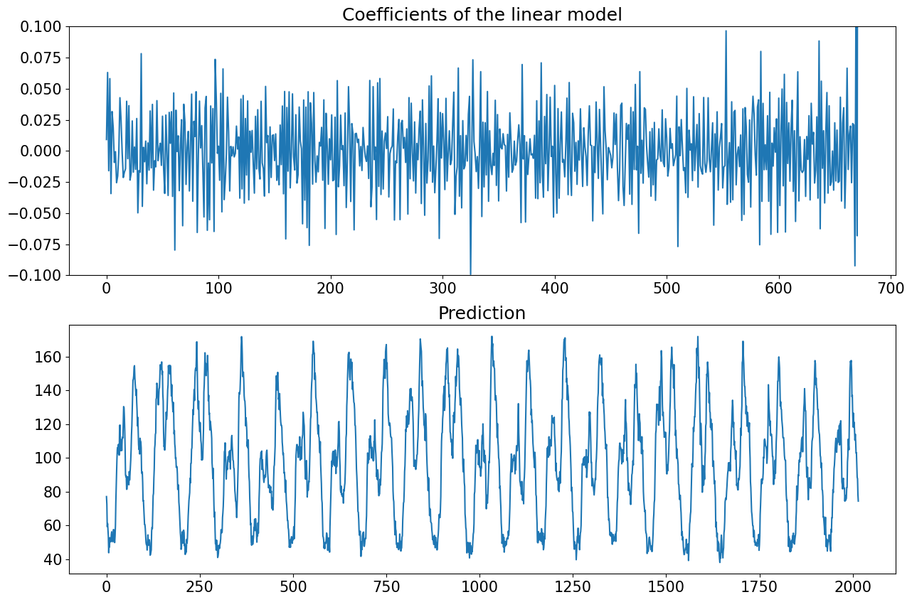
LECTURE 3 Exercises 3: Linear regression fitting
Create day-ahead forecasts for the whole year with the linear model (as you did previously for the persistence model). Assume that each day at midnight, you must create a forecast for the next 96 quarters. Compare the two methods (persistence and the linear model). Does the MAPE and R2 values of a linear model improve or worsen when compared with persistence? How does the rMAE look like? Is it greater than or smaller than 1?
Where we load the data, we aggregate demand for all houses and therefore make an aggregated forecast. Increasingly, with peer to peer concepts, it is becoming important to forecast energy demand in individual households. Rerun your code with data from a single household.
Estimate how the training time of your models scales as you increase the amount of training data.
1 | import datetime |
Prediction time:32928
time = 0:00:00.895473
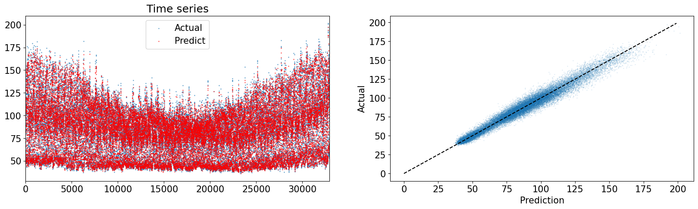
rMAE = 0.46
MAPE = 4.97
R2 = 0.96
MAPE:
Persistence > Linear Regression | MAPE difference = 5.79
R2:
Persistence < Linear Regression | R2 difference = 0.17
that means linear regression is better than the persistance model